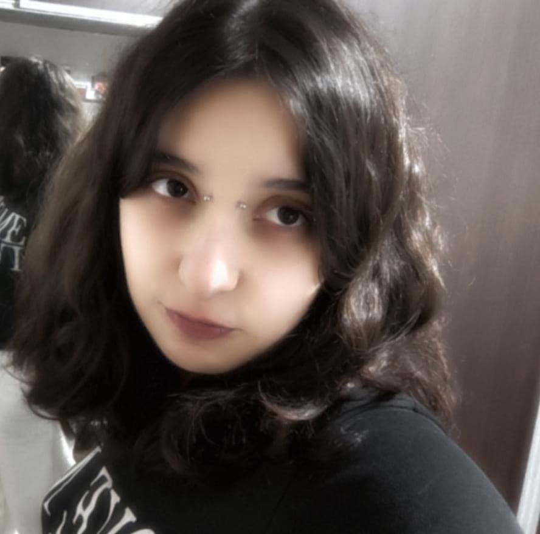
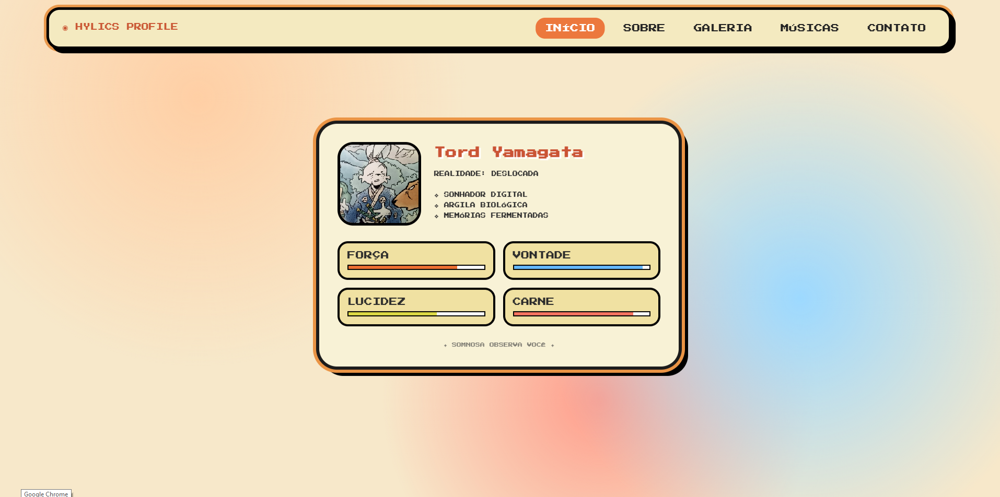
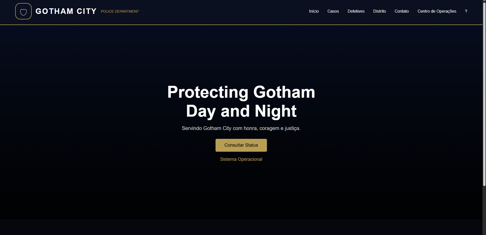

SYSTEM ONLINE // 1988—2019—NOW
SCROLL TO ENTER ↓
01
IDENTITY FILE
SOBRE MIM

TY / 01
ACTIVE
ACTIVE
DESENVOLVIMENTO, DESIGN E CURIOSIDADE EM CONSTANTE MOVIMENTO.
Sou estudante de Desenvolvimento de Software e gosto de transformar ideias em interfaces, páginas e pequenos sistemas. Atualmente estudo tecnologias como HTML, CSS, JavaScript, Python, PHP, C# e bancos de dados.
Este portfólio foi reconstruído com uma linguagem visual inspirada no cyberpunk japonês de Akira (1988): preto profundo, vermelho agressivo, estruturas industriais, diagonais e sensação de movimento.
STATUSLEARNING / BUILDING
FOCOWEB + SOFTWARE
GITHUB@TordYamagata ↗
02
TECHNICAL LOADOUT
MINHAS SKILLS
03
ARCHIVE / SELECTED WORKS
PROJETOS
001

MODAL + DARKMODE
JavaScript / DOM / UI
002

TEST HTML
HTML / CSS / JAVASCRIPT
003

GOTHAM CITY POLICE DEPARTMENT
HTML / CSS / JAVASCRIPT
PINNED REPOSITORIES